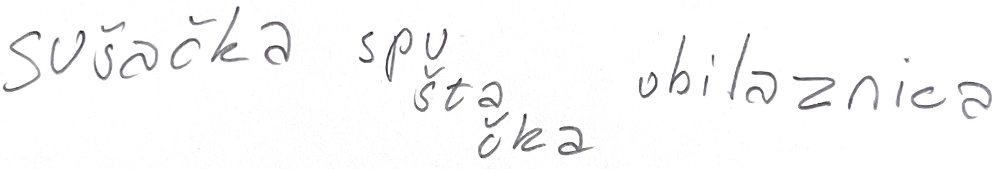
Sušačka spuštačka obilaznica interpretativna je karta koja urbanim istraživanjem dovodi istraživače do manje poznatih lokacija, građevina i priča Sušaka. Projekt reinterpretira planinarenje kao spuštanje od vrha prema dnu grada, pri čemu se sudionici uz pomoć karte i fotografija snalaze u prostoru dok uz pomoć teksta i žigova otkrivaju skrivene slojeve lokalnog identiteta. Humor, apsurd te neočekivani prostori i situacije koriste se kao dizajnerski alat za usmjeravanje pažnje na vrijednosti svakodnevnog urbanog krajolika koji najčešće ostaje neprimijećen.
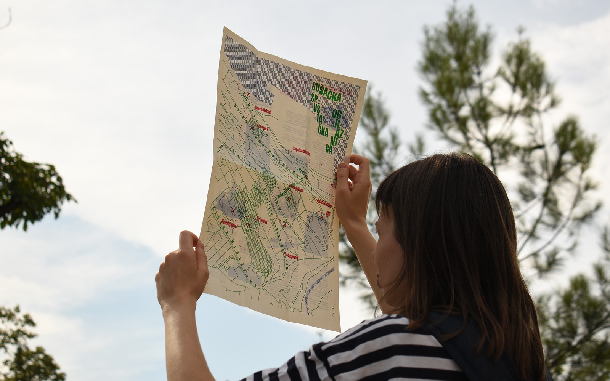
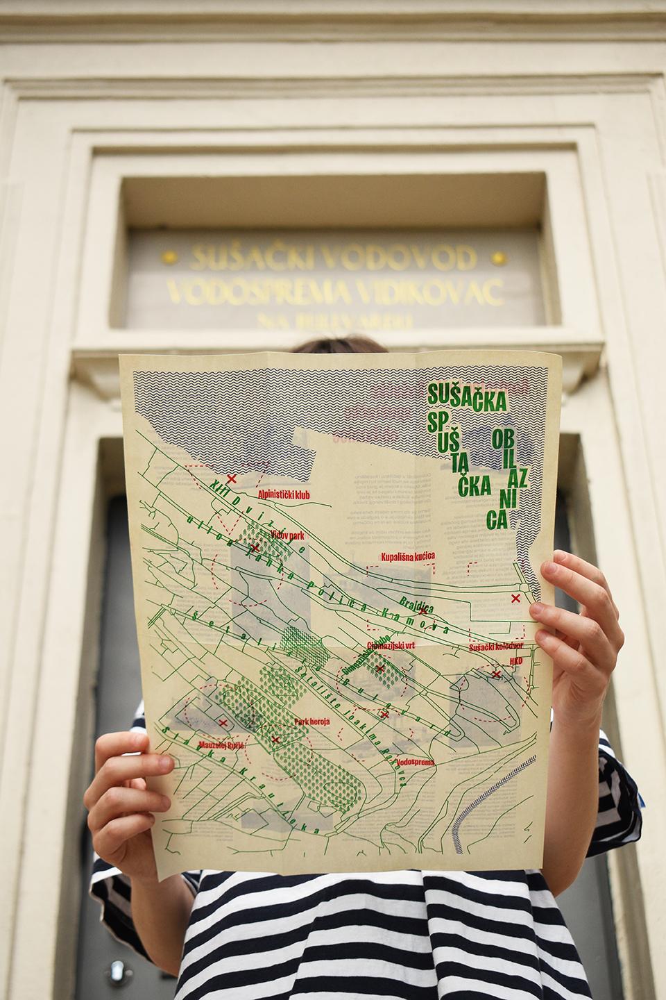
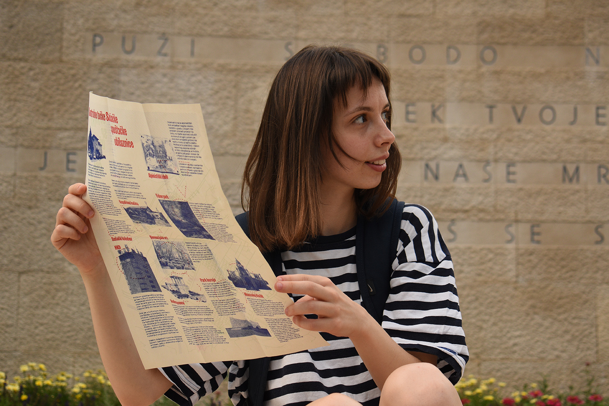
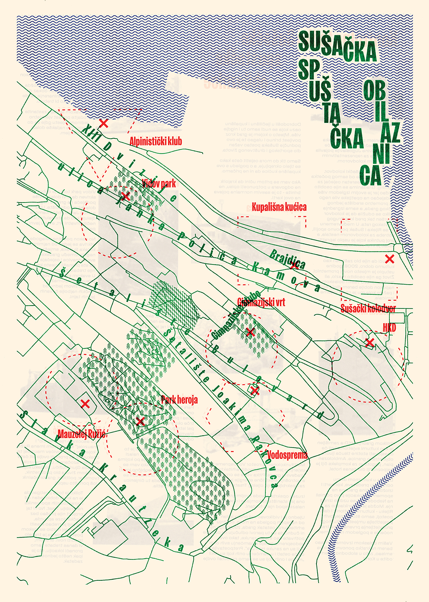
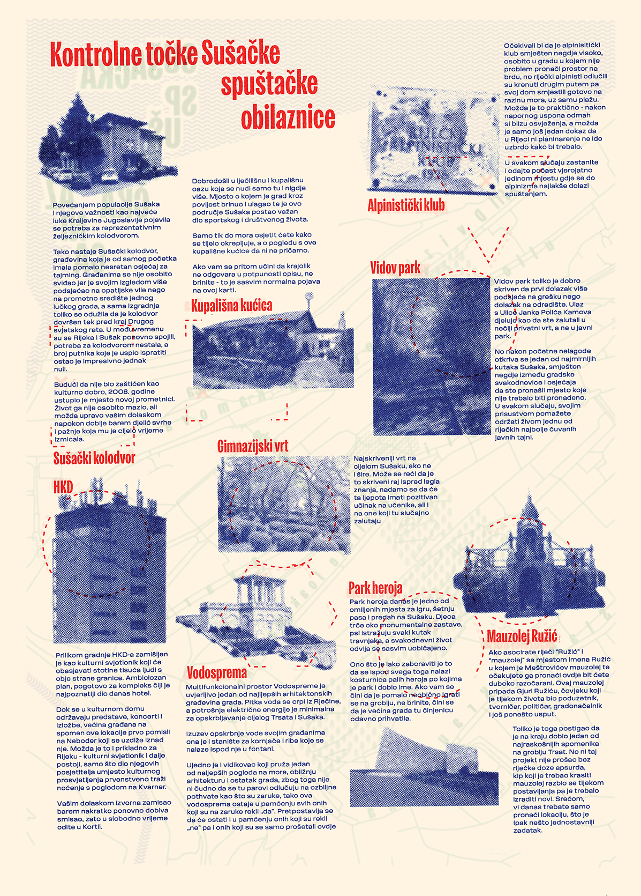
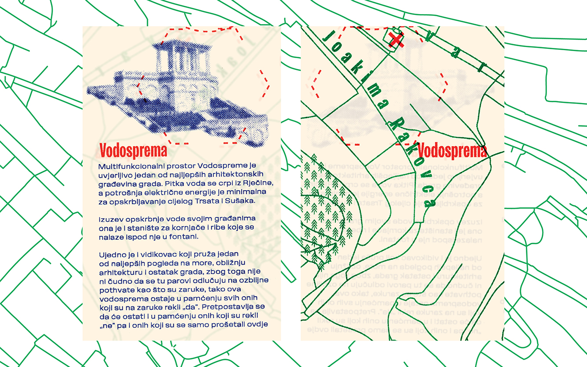
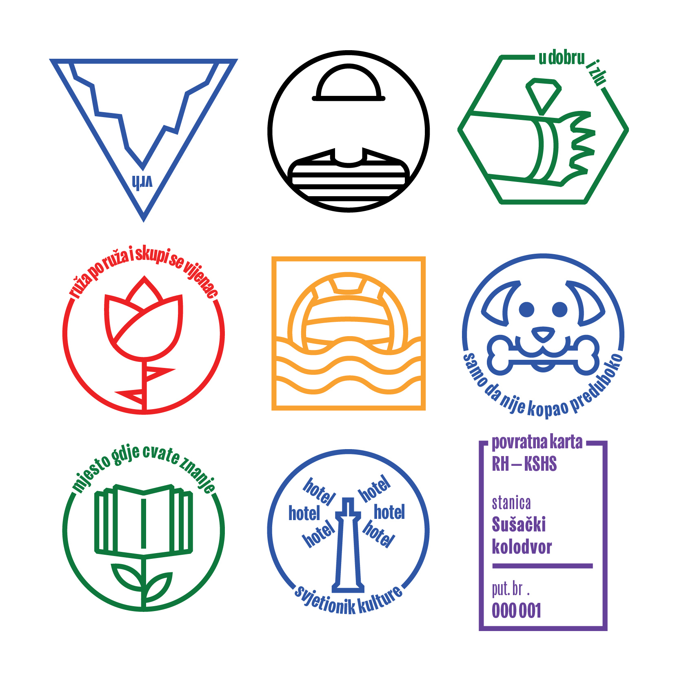
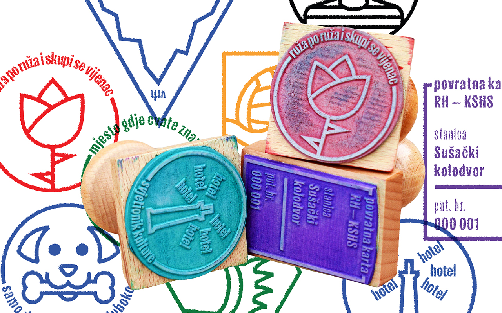
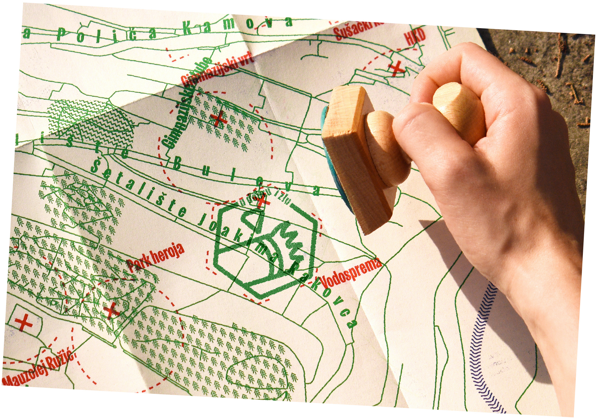
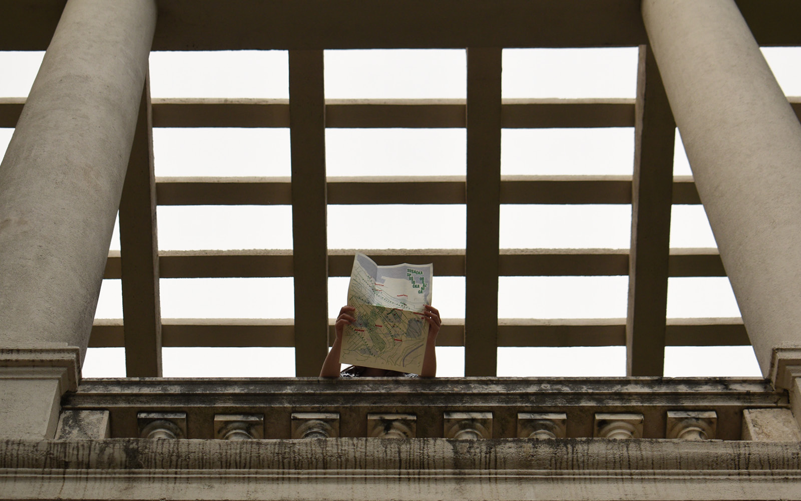